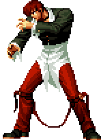
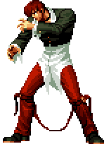

Historia
Golpes
Curiosidades
KOF 95
Iori Yagami faz sua estreia na série como um rival direto de Kyo Kusanagi. Ele entra no torneio como parte do Team Rivals, junto de Billy Kane e Eiji Kisaragi, com o objetivo de derrotar Kyo. Sua presença marca o início da saga Orochi, revelando suas ligações com o clã Yagami e o pacto sombrio com Orochi. Seu estilo de luta é selvagem e agressivo, destacando-se pelo uso das chamas púrpuras.
KOF 96
Iori retorna como parte do novo "Team of Rage", ao lado de Mature e Vice, secretamente agentes de Goenitz. Durante os eventos do torneio, Iori entra em modo Riot of the Blood, perdendo o controle e matando suas companheiras de equipe. Essa transformação revela o peso da maldição Orochi. Ele continua obcecado por derrotar Kyo, mesmo sendo usado como peão na trama maior.
KOF 97
A saga Orochi atinge seu clímax. Iori luta ao lado de Kyo e Chizuru como parte do "Sacred Treasures Team" para selar Orochi. Apesar de sua rivalidade com Kyo, ele coopera temporariamente para impedir o despertar do deus Orochi. No final, ele novamente entra em modo berserker e ajuda a conter Orochi com sua fúria. Essa aliança temporária se torna um momento icônico da série.
KOF 98
KOF '98 é um torneio especial sem conexão direta com a história principal. Iori retorna com seu estilo clássico e pode ser jogado tanto em sua forma normal quanto na versão "Orochi Iori", em modo berserker. Essa versão é baseada nos eventos de KOF '96 e '97. Ele continua sendo um dos personagens mais populares do jogo e símbolo do caos controlado.
KOF 99
Iori não participa oficialmente da história principal de KOF '99. O torneio introduz um novo protagonista, K’, iniciando a saga NESTS. Apesar disso, Iori está presente como personagem jogável em versões alternativas ou especiais. Sua ausência na narrativa principal destaca a mudança de foco da série, mas sua popularidade o mantém relevante.
KOF 2000
Novamente fora da história principal, Iori ainda é um personagem jogável em modos especiais. A saga NESTS continua, e Iori observa os acontecimentos à distância, mantendo-se como um observador sombrio. Sua ausência narrativa serve para criar tensão sobre seu futuro retorno. Apesar disso, os fãs continuam esperando seu confronto com os novos vilões.
KOF 2001
Iori retorna como personagem jogável, mas não faz parte do enredo central. A saga NESTS está em seu auge, e ele continua agindo por conta própria. Mesmo sem envolvimento direto, sua presença serve como lembrete da rivalidade eterna com Kyo. Ele é frequentemente usado como rival secreto ou especial em confrontos.
KOF 2002
Assim como KOF '98, KOF 2002 é uma edição especial sem enredo canônico. Iori aparece novamente em sua forma clássica, além de Orochi Iori como personagem extra. Seu retorno com todas as suas habilidades faz dele um dos mais escolhidos pelos jogadores. Ele se mantém como ícone da série mesmo fora da linha principal da história.
KOF 2003
Iori participa da história e junta-se a Kyo e Chizuru para enfrentar uma nova ameaça: o clã Those from the Past. A união dos três guardiões sagrados retorna, revivendo a aliança forçada de KOF '97. Sua motivação ainda é derrotar Kyo, mas a ameaça maior o obriga a cooperar. Ele se mostra mais instável, com sinais constantes da influência Orochi.
KOF XI
Iori é corrompido ainda mais pela energia Orochi e ataca seus aliados após uma luta. Ele entra no modo Riot of the Blood novamente e se isola, temendo machucar outros. Seu papel na história é breve, mas marcante, mostrando o quanto está perdendo o controle. A instabilidade crescente sugere que algo maior está por vir para o personagem.
KOF XII
Iori perde temporariamente suas chamas, tornando-se mais vulnerável e mudando seu estilo de luta. Seu visual e comportamento são mais contidos, mas ele mantém a rivalidade com Kyo. O jogo, embora com poucos personagens e sem enredo definido, apresenta essa mudança como marco importante. Sua relação com os poderes de Orochi está em transição.
KOF XIII
Iori recupera suas chamas ao rejeitar sua herança Orochi, com a ajuda de Chizuru. Ele participa como parte do time dos tesouros sagrados mais uma vez, enfrentando os planos do clã Those from the Past. Essa fase marca uma espécie de redenção para ele, mais consciente de seu papel na batalha contra forças maiores. Sua rivalidade com Kyo continua intensa, mas há sinais de amadurecimento.
KOF XIV
Iori entra sozinho no torneio, buscando novos confrontos e mantendo sua obsessão por Kyo. Ele recuperou totalmente o controle de suas chamas e exibe mais estabilidade emocional. Apesar disso, continua solitário e hostil. O enredo envolve uma nova ameaça interdimensional, mas Iori se mantém à margem, apenas interessado em batalhas fortes.
KOF XV
Iori se junta ao Team Sacred Treasures novamente, ao lado de Kyo e Chizuru. O trio trabalha junto para conter o surgimento de uma nova entidade ligada a Orochi. Seu domínio das chamas está completo, e ele demonstra maior controle sobre sua fúria interior. Sua presença é crucial para o equilíbrio entre os poderes místicos, reafirmando sua importância na série.